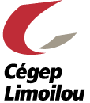
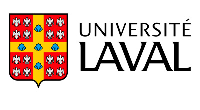
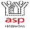
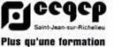
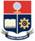
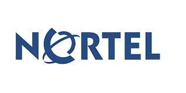
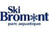

|
Conseiller Formation Technique
Hydro Québec, Réalisation des Activés de Développement,
Matériel de Transport, Direction Développement des Compétences
- Assurer le pilotage des habilitations d'une équipe de 16 formateurs
- Développer des Aide à la tâche intelligents (fichiers PDF programmés en JavaScript) exemples
- Maintenir à jour un patrimoine de 50 cours
- Introduire les nouvelles technologies (questionnaires interactifs avec des tablettes électroniques en absence de réseau wifi)
- Participer activement à la rédaction d'appels d'offres et à l'évaluation de soumissions pour de la formation donnée par des entreprises externes.
- Rédiger les clauses concernant la formation pour les appels d'offres d'équipements de transport.
|
2017 à Aujourd’hui
Québec, Québec
|

|
Enseignant (et Coordonnateur de programme: 95-96)
Cégep Limoilou, Technologies du Génie Électrique
- Donner les cours et laboratoires en Électronique industrielle (1ère à 3e année et à l’occasion à des enseignants de pays en voie de développement) : électronique de puissance, entraînement de machines électriques, cadenassage, «arc flash», santé et sécurité, organisation de réseaux, protection des installations, placement de stagiaires, Informatique.
- Programme Génie Industriel : Donner les cours et laboratoires d’automatisation.
- Gérer les affaires courantes de la coordination du programme: Électronique Industrielle.
- Concevoir l’adaptation sécuritaire et pédagogique des équipements industriels utilisés.
- Représenter les enseignants au Comité Paritaire en Santé et Sécurité au Travail.
- Utilisateur expérimenté des environnements informatisées d’apprentissage en ligne DecClic 2 et Moodle.
|
1992 à 2017 (sauf 1997 à 2000)
Québec, Québec
|
|  |
Formateur en Santé et Sécurité
Université Laval, Faculté des Sciences et Génie
- Donner occasionnellement les cours de Santé et Sécurité Générale sur les Chantiers de Construction accrédités par l’ASP Construction à des étudiant(e)s en génie.
|
2020 à Aujourd'hui
Québec, Québec
|
 |
Formateur en Santé et Sécurité
Commission Scolaire Kativiq
- Donner occasionnellement en anglais les cours de Santé et Sécurité Générale sur les Chantiers de Construction accrédités par l’ASP Construction dans les communautés de : Kuujjuaq (7x), Puvirnituq (3x), Salluit (3x), Kuujjuaraapik (2x), Inukjuaq (2x), Ivujivik, Kangiqsujuaq, Kangiqsuk, et Aupaluk.
|
2010 à 2018/2019?
Nunaviq, Québec
|
|
Formateur en Santé et Sécurité
APCHQ (section Québec)
- Donner occasionnellement les cours de Santé et Sécurité Générale sur les Chantiers de Construction accrédités par l’ASP Construction à une clientèle très hétérogène.
|
2016 à 2020/2021?
Québec, Québec
|
|
Formateur en Santé et Sécurité
Réseautact (Commission Scolaire des Draveurs)
- Donner en anglais les cours de Santé et Sécurité Générale sur les Chantiers de Construction accrédités par l’ASP Construction à une clientèle Hollandaise.
|
Automne 2018
Monster, Pays Bas
|
|
Formateur en Santé et Sécurité
ACQ (Estrie)
- Donner en anglais les cours de Santé et Sécurité Générale sur les Chantiers de Construction accrédités par l’ASP Construction à des travailleurs étrangers
|
Automne 2021?
Usine Kruger, Bromptonville
|
|
Signaleur routier et planificateur de signalisation accrédité par l’AQTr
GardaWorld
- Assurer la sécurité des travailleurs et du public sur les chantiers routiers.
|
Étés 2013 et 2014
Québec, Québec
|
|
Enseignant en Bureautique et Animateur Pédagogique
Lycée Professionnel Commercial de Franceville
Cégep St-Jean-sur-Richelieu (Coopération Canadienne)
- Donner les cours et laboratoires en bureautique (2ème et 4ème BEP, 1ère et 2ème BET).
- Conception d’outils pour l’apprentissage de l’informatique.
- Formation d’enseignants en informatique.
- Implantation d’un premier réseau dans un laboratoire informatisé et son entretien.
- Dépannage d’équipements électriques et électroniques (photocopieur, climatiseur, etc…)
|
1998-2000
Franceville, Gabon
|
|  |
Enseignant en Informatique Industrielle
Lycée Technique de Moanda
Cégep St-Jean-sur-Richelieu (Coopération Canadienne)
- Donner les cours et laboratoires en informatique industrielle (1ère et Terminale).
- Conception des épreuves pour les examens du baccalauréat.
- Formation d’enseignants en informatique.
- Implantation d’une première salle informatisée à partir d’ordinateurs recyclés.
- Entretien, Réparation et Dépannage de postes informatisés à l’Université USTM.
|
1997-1998
Moanda, Gabon
|
|  |
Formateur d’enseignants en électronique industrielle
Escuela Polytechnica Nationalidad de Quito
- Donner des cours de perfectionnement en électronique industrielle (entraînement de machines à l’aide de Power Mosfets) aux enseignants de l’Escuela Polytechnica Nationalidad de Quito.
- Formation didactique et pédagogique (en espagnol).
|
Été 1996
Quito, Équateur
|
|
Formateur / Encadreur de futurs enseignants
Consortium Intercollégial de Développement en Éducation
- Donner des cours de perfectionnement sur mesure et encadrer les stages de perfectionnement d’enseignants (ou de futurs enseignants) provenant de la Côte d’Ivoire, de la Tunisie, de l’Équateur et de l’Algérie.
|
1993-1997
Québec, Québec
|
|
Chargé de cours en NTIC
Université de Sherbrooke, Faculté d’Éducation
- Donner le perfectionnement concernant les nouvelles technologies de l’information et des communications (dont Internet). (Cours d’un certificat de perfectionnement en enseignement collégial: aspects techniques et pédagogiques).
|
1996
Québec, Québec
|
|
Formateur / Personne ressource en Électricité et électronique de puissance
Université de Sherbrooke / Direction Générale de l’Enseignement Collégial (Programme A.T.P.E.)
- Donner le perfectionnement en électricité et électronique de puissance aux professeurs impliqués dans l'implantation des nouveaux programmes des Technologies du Génie Électrique. (Cours de maîtrise en enseignement : aspects didactiques et pédagogiques).
|
1993-1995
province de Québec
|
|
Responsable de projets électriques
Bridgestone /Firestone Canada Limitée
- Apporter des améliorations aux automates et circuits à relais dans l'usine.
- Superviser les travaux des électriciens.
- Programmer et "déverminer" (debugger) des circuits en diagramme en échelle (ladder).
|
Hiver 1991
Joliette, Québec
|
|  |
Programmeur de robots
Northern Telecom Canada Limitée (Nortel)
- Coordonner un projet d'ajout d'un vérificateur sur un robot Puma 200 (design de connections, optimisation de programmes, support auprès des installateurs, ...).
- Implanter un système de détection automatisée des causes d'arrêts pour des robots.
- Développer et produire des spécifications générales pour la conception de tels systèmes.
- Agir comme personne ressource dans le cas de panne des machines de contrôle de qualité de l'usine.
- Superviser les travaux des électriciens.
|
Été 1990
Ville Saint-Laurent, Québec
|
|
Programmeur d’automates
Northern Telecom Canada Limitée (Nortel)
- Évaluer différentes possibilités de systèmes programmables communiquant avec des automates.
- Implanter un système de détection automatisée des causes d'arrêts des automates.
- Modifier les programmes des automates pour améliorer leur productivité.
- Superviser les travaux des électriciens.
- Effectuer l'entraînement des opérateurs avec les nouveaux systèmes implantés.
|
Automne 1989
Ville Saint-Laurent, Québec
|
|
Assistant-chercheur
Institut de recherche d'Hydro Québec (IREQ)
Service : Lignes Aériennes et Isolation Externes
- Développer un logiciel d'utilisation d'un système d'acquisition de signaux de courant de foudre.
- Produire un document de vulgarisation sur la foudre.
- Préparer avec un technicien les unités d'acquisition de signaux pour la saison d'orages.
|
Hiver 1989
Varennes, Québec
|
.jpg) |
Organisateur-documentaliste
Université de Sherbrooke (Projet Alizée)
- Effectuer des recherches documentaires pour le projet de développement du véhicule innovateur Alizée (présenté à l’Exposition Universelle de Vancouver)
- Organiser des kiosques de présentation du projet
- Coordonner l’implication de plusieurs dizaines de bénévoles au sein du projet
- Organiser une conférence de presse
|
Été 1988
Sherbrooke, Québec
|
 |
Opérateur de séchoir à bois et manœuvre dans une cour à bois
Les Produits Forestiers Rock Forest Inc
- Assurer le contrôle du séchage de différentes essences de bois
- Conduite de chariots élévateurs
- Préparation du bois d’œuvre et de construction pour le séchage
|
Étés 1988 et antérieurs
Rock Forest, Québec
|
|
Manœuvre dans un atelier de menuiserie
Grégoire Lumberland
- Préparation et Réalisation de la coupe des différents matériaux de menuiserie
|
Étés 1988 et antérieurs
Rock Forest, Québec
|
|  |
Préposé à l’accueil
Centre de ski Bromont
- Accueil du public
- Vérification des bagages des utilisateurs pour assurer la sécurité des lieux (plans d’eau)
|
Été 1987
Bromont, Québec
|
|
|
Québec, Québec
|